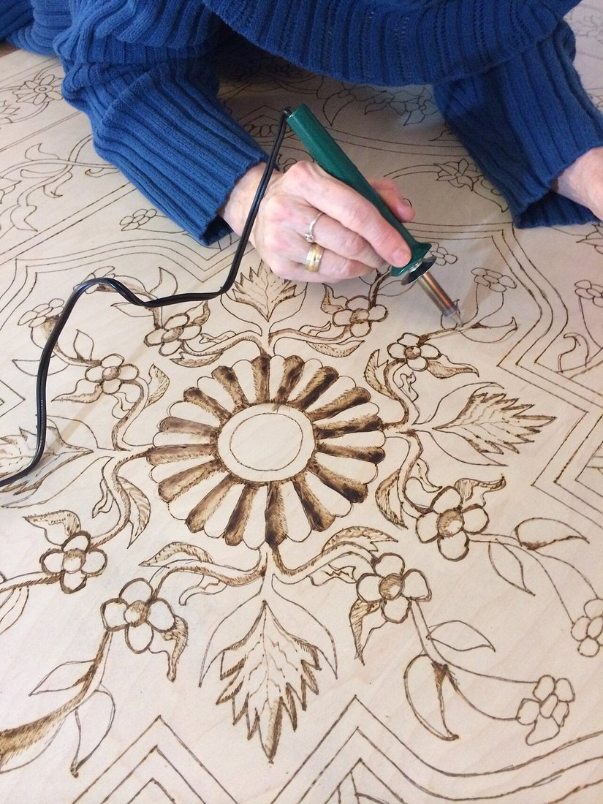
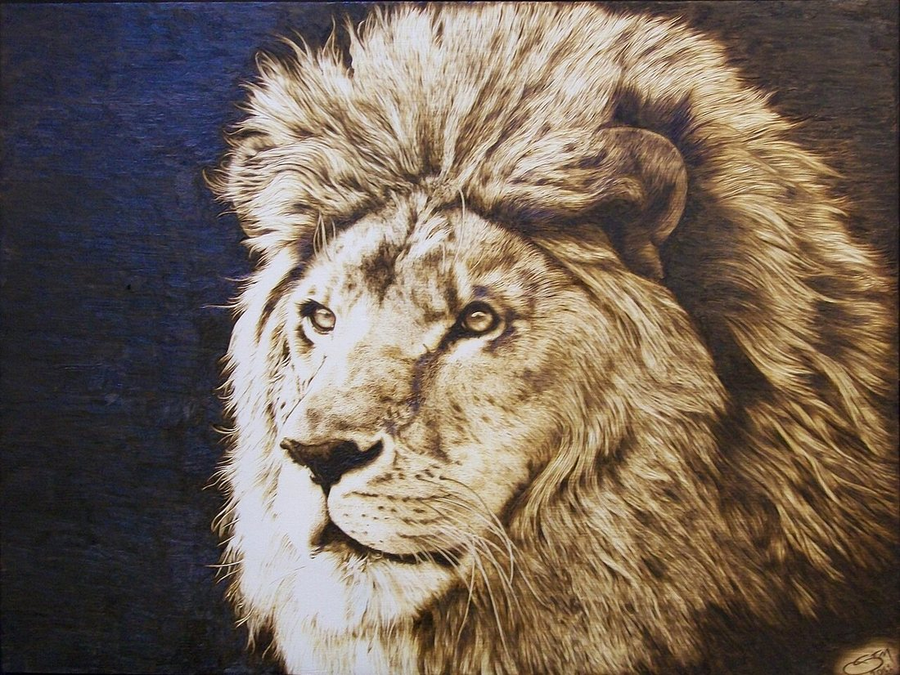
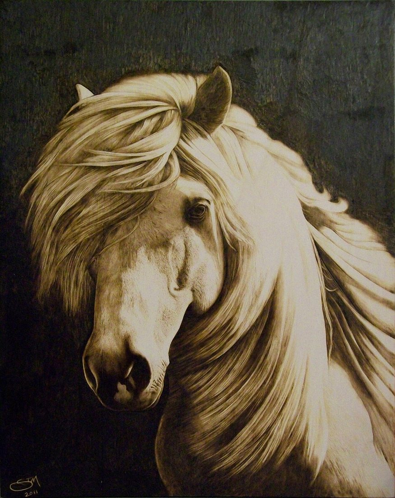
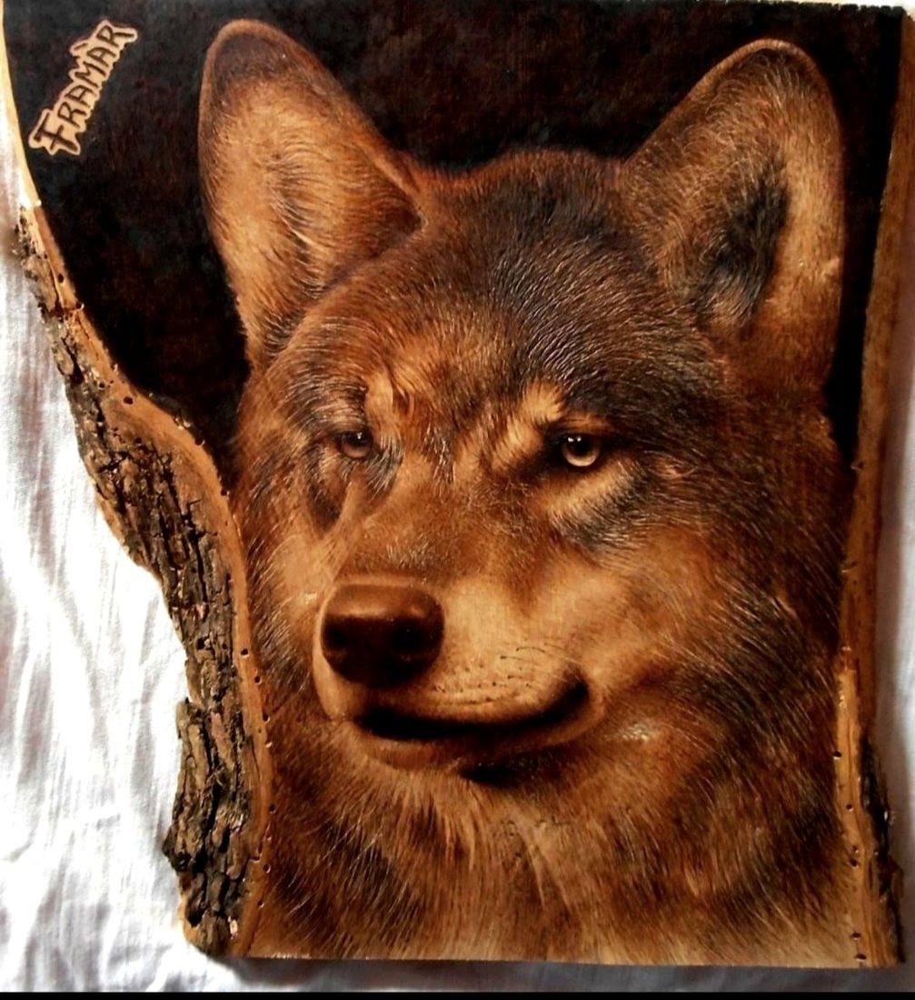

Көркем еңбек (ұлдар) · 2-бөлім · Ағаш өңдеу Art & Craft (Boys) · Section 2 · Woodworking Художественный труд (мальчики) · Раздел 2 · Обработка древесины
🔥 Ағашты күйдіріп өрнектеу (пирография)
🔥 Wood Burning (Pyrography)
🔥 Выжигание по дереву (пирография)
Қызған ұшпен ағаш бетіне сурет пен өрнек күйдіріп салу өнері. The art of drawing pictures and patterns on wood with a hot tip. Искусство наносить рисунки и узоры на дерево раскалённым пером.
Пирография (грекше pyr — от, graphо — жазу) — қызған металл ұшпен ағаш, фанера, тері немесе тоздың бетіне сурет пен жазу күйдіріп түсіру өнері. Орысша оны «выжигание по дереву» деп атайды. Ұш қаншалық ыстық әрі баяу жылжыса, із соншалық қою болады — осылай ашық сарыдан қара-қоңырға дейінгі бүкіл реңк шкаласы туады. Pyrography (from Greek pyr — fire, graphos — writing) is the art of burning pictures and lettering onto wood, plywood, leather or gourd with a hot metal tip. In Russian it is called «выжигание по дереву». The hotter the tip and the slower it moves, the darker the mark — this gives a full range of tones, from pale tan to deep brown-black. Пирография (от греч. pyr — огонь, graphо — пишу) — искусство выжигать рисунки и надписи на дереве, фанере, коже или тыкве-горлянке раскалённым металлическим пером. По-русски это называют «выжигание по дереву». Чем горячее перо и чем медленнее оно движется, тем темнее след — так получается вся шкала тонов: от светло-золотистого до тёмно-коричневого.
Бұл — ағаш өңдеудің ежелгі тәсілі: адамдар оны әлі электр болмай тұрып, отта қыздырылған темір таяқшамен орындаған. Бүгінде мектеп шеберханасында арнайы электрлі выжигатель (пирограф) қолданылады — оны қауіпсіз ұстай білу маңызды. It is an ancient way of decorating wood: people did it long before electricity, using an iron rod heated in a fire. Today the school workshop uses a special electric wood-burning pen (pyrograph) — and knowing how to handle it safely is essential. Это древний способ украшать дерево: люди занимались им задолго до электричества, нагревая металлический стержень в огне. Сегодня в школьной мастерской используют специальный электрический выжигатель (пирограф) — и важно уметь обращаться с ним безопасно.
Құрал қалай жұмыс істейді How the Tool Works Как работает инструмент

Жылу өткізбейтін, қаламша тәрізді.Heat-proof, pen-shaped.Не нагревается, как карандаш.
Никель-хром сым, 400–700 °C-қа дейін қызады.Nichrome wire, heats to 400–700 °C.Нихромовая, греется до 400–700 °C.
Сызық, көлеңке, бедер үшін.For lines, shading, texture.Для линий, теней, фактуры.
Температураны өзгертеді.Sets the temperature.Меняет температуру.
Ток сымдағы жұқа никель-хром ұшты қыздырады. Ыстық ұш ағаштың жоғарғы талшықтарын күйдіреді — қою із қалады. Із түсі үш нәрсеге байланысты: температура, ұштың жылдамдығы және ағаш түрі. Electric current heats a thin nichrome nib. The hot nib chars the top fibres of the wood, leaving a dark mark. The shade depends on three things: temperature, the speed of the tip and the type of wood. Ток нагревает тонкое нихромовое перо. Горячее перо обугливает верхние волокна дерева, оставляя тёмный след. Оттенок зависит от трёх вещей: температуры, скорости пера и породы дерева.
Реңкті қалай басқарамыз Controlling the Tone Как управлять тоном
Бір ғана ұшпен жарықтан қара-қоңырға дейінгі бүкіл шкаланы алуға болады. With a single tip you can get the whole scale, from light to dark brown. Одним пером можно получить всю шкалу — от светлого до тёмно-коричневого.
| Тон | Температура | Скорость пера | Результат |
|---|---|---|---|
| Светлый | Низкая | Быстро | Тонкие светло-золотистые линии, лёгкая штриховка |
| Средний | Средняя | Спокойно | Чёткий контур, мягкие тени |
| Тёмный | Высокая | Медленно | Глубокий коричневый, насыщенный фон |
| Чёрный | Высокая | Очень медленно / повтор | Почти чёрный — только для акцентов |
| Реңк | Температура | Ұш жылдамдығы | Нәтиже |
|---|---|---|---|
| Ашық | Төмен | Жылдам | Жіңішке ашық-алтын сызық, жеңіл штрих |
| Орташа | Орташа | Байсалды | Анық контур, жұмсақ көлеңке |
| Қою | Жоғары | Баяу | Терең қоңыр, қанық фон |
| Қара | Жоғары | Өте баяу / қайталап | Қап-қара — тек екпін үшін |
| Tone | Temperature | Tip speed | Result |
|---|---|---|---|
| Light | Low | Fast | Thin pale-gold lines, light hatching |
| Medium | Medium | Steady | Crisp outline, soft shadows |
| Dark | High | Slow | Deep brown, rich background |
| Black | High | Very slow / repeated | Almost black — for accents only |
Жұмыс реті: қадам-қадаммен The Process, Step by Step Порядок работы: шаг за шагом
Тақтайшаны дайында.Prepare the board.Подготовь дощечку. Тегіс, түйінсіз фанера не жұмсақ ағаш ал; бетін майда егеумен тазалап, шаңын сүрт.Take smooth, knot-free plywood or soft wood; sand it lightly and wipe off the dust.Возьми гладкую фанеру или мягкое дерево без сучков; ошкурь поверхность и сотри пыль.
Суретті түсір.Transfer the drawing.Перенеси рисунок. Эскизді жұмсақ қарындашпен сал немесе көшірме қағазбен түсір. Сия пайдаланба — ол күйгенде иістенеді.Draw the design with a soft pencil or trace it with carbon paper. Don't use ink — it smells when burnt.Нанеси эскиз мягким карандашом или переведи через копирку. Не используй чернила — они дымят.
Қыздыр та сына.Heat & test.Прогрей и попробуй. Выжигательді қыздыр; алдымен қалдық тақтайда із сынап, температураны таңда.Let the burner heat up; test the mark on a scrap board and choose the temperature.Дай выжигателю нагреться; проверь след на обрезке и подбери температуру.
Контурды күйдір.Burn the outline.Выжги контур. Ұшты тым қатты баспай, бірқалыпты жылдамдықпен жүргіз. Талшық бойымен жүрген ыңғайлы.Move the tip at an even speed without pressing hard. Going with the grain is easier.Веди перо с ровной скоростью, не нажимая сильно. Удобнее вести вдоль волокон.
Көлеңке сал.Add shading.Сделай тени. Жеңіл штрихпен қайталай жүргізіп, көлемі мен реңкін шығар.Build volume and tone with light, repeated hatching.Лёгкой повторной штриховкой создай объём и тон.
Әрлеп бітір.Finish.Заверши отделку. Күйенің шаңын тазала; қаласаң, түссіз лак не балауызбен қапта.Brush off the soot; if you like, coat it with clear varnish or wax.Очисти копоть; при желании покрой прозрачным лаком или воском.
Шеберлердің жұмыстары Works by Masters Работы мастеров
🔍 Үлкейту үшін фотоны басыңыз. Бәрі — нағыз ағашқа күйдірілген суреттер. 🔍 Tap a photo to enlarge. All are real pictures burnt into wood. 🔍 Нажмите на фото, чтобы увеличить. Все — настоящие рисунки, выжженные по дереву.



Нені әрлеуге болады What You Can Decorate Что можно украсить
Пирографияны ою-өрнекпен — мысалы, қазақ ұлттық оюларымен — ұштастыруға да болады: «қошқар мүйіз», «су», «жапырақ» өрнектерін ағашқа күйдіріп, ұлттық сувенир жасауға болады. Pyrography also pairs well with ornament — for example, Kazakh national patterns: you can burn «koshkar-muiz» (ram's horn), «su» (water) or leaf motifs into wood to make a national-style souvenir. Пирографию можно сочетать с орнаментом — например, с казахскими национальными узорами: выжечь «қошқар мүйіз» (бараний рог), «су» (волну) или растительный мотив и сделать национальный сувенир.
Қандай ағаш қолайлы Which Wood Is Best Какое дерево подходит
Жақсы: жөке (липа), қайың фанерасы, терек — ашық түсті, тегіс, шайыры аз. Із айқын шығады. Good: lime (basswood), birch plywood, poplar — light, smooth, low resin. The mark shows clearly. Хорошо: липа, берёзовая фанера, тополь — светлые, гладкие, малосмолистые. След виден чётко.
Қиын: қарағай мен шырша — шайыры көп, тегіс емес күйеді; емен мен жаңғақ — қатты, қою түсті, реңк нашар байқалады. Harder: pine and spruce are resinous and burn unevenly; oak and walnut are hard and dark, so tones show less. Сложнее: сосна и ель смолисты и горят неровно; дуб и орех твёрдые и тёмные — тон виден хуже.
⚠️ Қауіпсіздік ережелері ⚠️ Safety Rules ⚠️ Правила безопасности
🔥 Ұш өте ыстық — тек тұтқадан ұста, металына тиме.🔥 The tip is very hot — hold only the handle, never the metal.🔥 Перо очень горячее — держи только за ручку, не трогай металл.
🧰 Қызған выжигательді тек арнайы тіреуішке қой, үстелге жатқызба.🧰 Rest the hot burner only on its stand, never lay it on the table.🧰 Горячий выжигатель клади только на подставку, не на стол.
💨 Желдетілген жерде жұмыс істе — түтінді жұтпа.💨 Work in a ventilated room — don't breathe the smoke.💨 Работай в проветриваемом помещении — не вдыхай дым.
🚫 Боялған не лакталған ағашты күйдірме — улы түтін бөлінеді.🚫 Never burn painted or varnished wood — it gives off toxic fumes.🚫 Не выжигай по окрашенному или лакированному дереву — ядовитый дым.
💧 Жанында су не құм болсын; шашты, киімді абайла.💧 Keep water or sand nearby; mind hair and loose clothing.💧 Держи рядом воду или песок; убери волосы и свободную одежду.
🔌 Жұмыс біткенде токтан ажыратып, толық суытып барып жина.🔌 When done, unplug it and let it cool fully before storing.🔌 По окончании выключи из сети и дай полностью остыть.
💬 Қорытынды 💬 In a nutshell 💬 Главное
Пирография — қарапайым құралмен ағашқа нағыз өнер туындысын саларлық тәсіл. Бар сыры — реңкті басқару: температура, жылдамдық пен ағаш түрін сезіну. Қауіпсіздікті сақтап, алдымен жаттығу тақтасында машықтансаң, көп ұзамай өз қолыңмен әсем панно немесе ұлттық сувенир жасай аласың. Pyrography turns a simple tool into a way of making real artwork on wood. Its whole secret is tonal control: feeling the temperature, the speed and the type of wood. Follow the safety rules, practise first on a scrap board, and you will soon be able to make a beautiful plaque or a national souvenir with your own hands. Пирография превращает простой инструмент в способ создавать настоящие произведения на дереве. Весь секрет — в управлении тоном: чувствовать температуру, скорость и породу дерева. Соблюдай правила безопасности, потренируйся на обрезке — и вскоре сделаешь красивое панно или национальный сувенир своими руками.